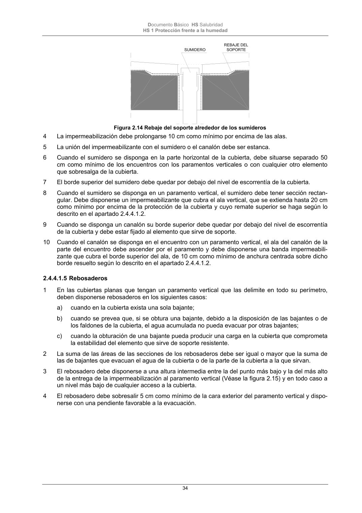

DB-HS · 2.4.4.1.5 Rebosaderos · versión 2022-06-14 · capa oficial
Formatos: JSON compacto · Markdown · PDF fuente
Ámbito del documento · texto del ámbito · documento y tablas
ID técnico a0080 · PDF pág. 34-35 · jerarquía no validada por persona · contrastado con el literal de la página 34 (candidato tipográfico); no validado por persona · padre: a0075
2.4.4.1.5 Rebosaderos 1 En las cubiertas planas que tengan un paramento vertical que las delimite en todo su perímetro, deben disponerse rebosaderos en los siguientes casos: a) cuando en la cubierta exista una sola bajante; b) cuando se prevea que, si se obtura una bajante, debido a la disposición de las bajantes o de los faldones de la cubierta, el agua acumulada no pueda evacuar por otras bajantes; c) cuando la obturación de una bajante pueda producir una carga en la cubierta que comprometa la estabilidad del elemento que sirve de soporte resistente. 2 La suma de las áreas de las secciones de los rebosaderos debe ser igual o mayor que la suma de las de bajantes que evacuan el agua de la cubierta o de la parte de la cubierta a la que sirvan. 3 El rebosadero debe disponerse a una altura intermedia entre la del punto más bajo y la del más alto de la entrega de la impermeabilización al paramento vertical (Véase la figura 2.15) y en todo caso a un nivel más bajo de cualquier acceso a la cubierta. 4 El rebosadero debe sobresalir 5 cm como mínimo de la cara exterior del paramento vertical y dispo- nerse con una pendiente favorable a la evacuación. Documento Básico HS Salubridad HS 1 Protección frente a la humedad 35 Figura 2.15 Rebosadero

PDF fuente redistribuible: copia fiel enlazada en esta página (SHA256 verificado).